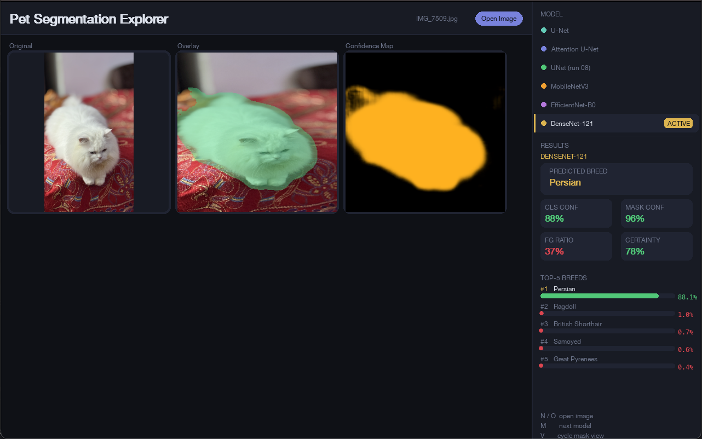

Pet Segmentation and Classification
Dual-task pet segmentation + 37-breed classification from a shared encoder, comparing U-Net, Attention U-Net, an EfficientDet-style BiFPN and pretrained-backbone hybrids on Oxford-IIIT Pet.

One encoder, two answers
Scroll to watch it unfold. Each beat is one documented step of the project.
- 01
Shared encoder
One backbone extracts features from the photo.
- 02
Segmentation head
One head separates the pet from the background.
- 03
Classification head
The other head names the breed out of 37.
- 04
Outcome
One pass gives both the pet's outline and its breed.
- 05
Compare designs
The project measures how much attention or a better fusion neck actually helps.
An illustration of how the system works, drawn from the write-up below. It is not recorded output.
Overview
A dual-task computer-vision system that does two things at once from a single shared encoder: it segments the pet from the background, and it classifies the animal's breed across 37 classes. Both heads train together on one backbone, so the features learned for “where is the pet” also help answer “what breed is it.” The project's real question is architectural — how much does adding attention, or a smarter feature-fusion neck, actually help on this joint task? — so several encoder-decoder designs are built and compared head-to-head. (CSE428 — Computer Vision Laboratory, on the Oxford-IIIT Pet dataset: 7,349 images across 37 breeds.)
The two tasks, one encoder
Segmentation is framed as pixel-wise foreground vs background (the dataset's trimap boundary pixels are folded into the foreground), while breed classification is a 37-way head that branches off the encoder's bottleneck. A single combined loss balances the two — a class-weighted pixel loss for the mask plus a weighted cross-entropy for the breed — so the shared encoder has to serve both objectives at the same time rather than specialising for one.
Architectures compared
Four encoder-decoder designs run through the same evaluation harness so differences are attributable to the architecture alone: a baseline U-Net; an Attention U-Net that adds soft attention gates on each skip connection so the decoder learns to ignore irrelevant background; a BiFPN variant (adapted from EfficientDet) that swaps plain skip connections for a bidirectional, weighted feature-pyramid neck for richer multi-scale fusion; and a transfer-learning hybrid that pairs a pretrained backbone classifier with the segmentation path. A 3-class variant that keeps the trimap boundary as its own class is also supported.
Training & engineering
Beyond the models, this is a full, reproducible training toolkit. An Optuna hyperparameter search (with a learning-rate finder) tunes each model before its final run; offline augmentation, label smoothing and mixup regularise training; and mixed-precision (AMP), gradient clipping, plateau-based LR scheduling and early stopping keep runs fast and stable. Every run writes a timestamped folder with its exact config, checkpoints, per-epoch metrics and publication-style plots, and the code auto-selects device-specific settings so the same codebase runs on CUDA GPUs and Apple-Silicon (MPS) laptops.
By the numbers
Tech stack & key skills
Core tools, methods and skills demonstrated in this project: